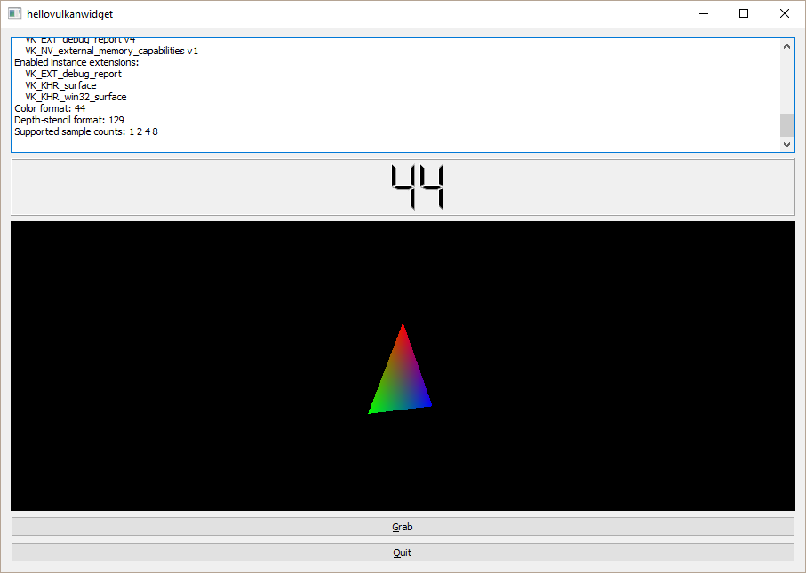

Hello Vulkan Widget Example
Shows the usage of QVulkanWindow in QWidget applications.
The Hello Vulkan Widget Example is a variant of hellovulkantriangle that embeds the QVulkanWindow into a QWidget-based user interface using QWidget::createWindowContainer().

The code to set up the Vulkan pipeline and render the triangle is the same as in hellovulkantriangle. In addition, this example demonstrates another feature of QVulkanWindow: reading the image content back from the color buffer into a QImage. By clicking the Grab button, the example renders the next frame and follows it up with a transfer operation in order to get the swapchain color buffer content copied into host accessible memory. The image is then saved to disk via QImage::save().
Running the Example
To run the example from Qt Creator, open the Welcome mode and select the example from Examples. For more information, visit Building and Running an Example.